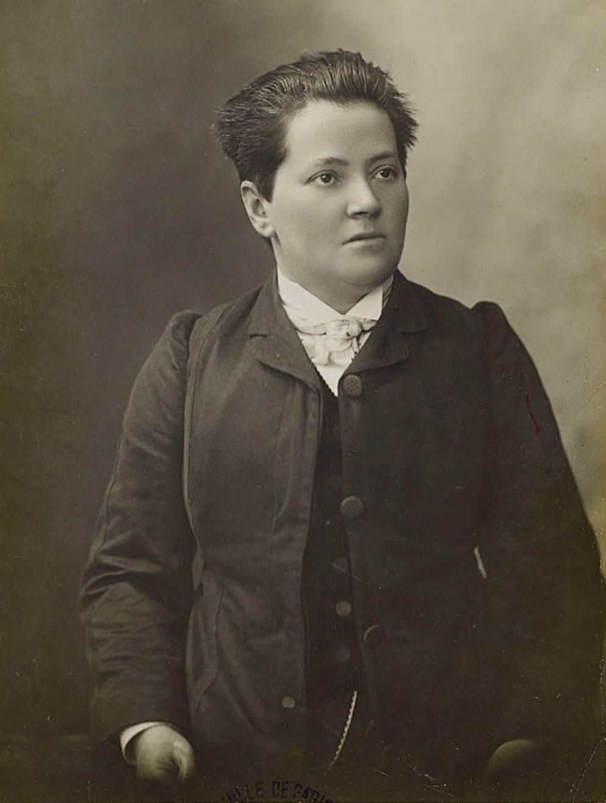

Contexte
Madeleine Pelletier (1874-1939) naît dans une famille pauvre de Paris. Elle quitte l'école à 12 ans, reprend seule ses études, et devient médecin. En 1903, elle obtient de passer le concours d'internat des asiles, jusque-là réservé aux hommes, et devient l'une des premières femmes psychiatres de France.

Elle se coupe les cheveux, porte le costume, le chapeau et parfois un revolver, sans demander l'autorisation de « travestissement » alors exigée par la police. Socialiste, franc-maçonne, proche des milieux anarchistes et néo-malthusiens, elle écrit dans L'Idée libre et défend le droit à l'avortement dès 1913. En 1908, elle publie La Femme en lutte pour ses droits, un petit livre de combat.
La thèse
La prétendue infériorité des femmes n'a rien de naturel : elle est fabriquée par l'éducation, la famille, l'école et le mariage. Pour s'en libérer, les femmes doivent conquérir tous les droits des hommes, à commencer par le vote, tous les métiers, et la liberté de vivre sans dépendre d'un mari.
Les idées, dans l'ordre
- Tout commence avant la naissance : on espère un garçon, et une fille est déjà une déception.
- L'éducation fabrique la soumission : on apprend l'énergie aux garçons, la docilité aux filles. Chez les pauvres, la fille sert déjà son frère.
- L'école prépare au mariage, pas au savoir. Une fois mariée, la femme de la bourgeoisie n'a plus de but ; l'ouvrière, elle, subit l'ordre masculin de l'argent et de la force.
- Le vote d'abord, car sans droits politiques les femmes n'obtiendront rien.
- Tous les métiers, sans protection spéciale : Pelletier refuse les lois qui « protègent » les ouvrières, car elles les enferment dans des emplois à part.
- La maternité mérite le respect, mais ne doit jamais devenir un statut ni un devoir.
- Une tactique : former de grandes organisations féministes et entrer dans les partis, sans jamais s'y laisser absorber.
- À terme, la fin du mariage, l'union libre, la famille qui n'a plus rien de sacré, et une société qui prend en charge les enfants.
Débats et limites
- Une stratégie peu libertaire : Pelletier mise sur le vote et l'entrée dans les partis, ce que les anarchistes de son temps critiquaient. Elle-même s'en éloignera en partie.
- La « virilisation » des femmes : elle propose aux femmes d'acquérir une énergie « virile », jusqu'à servir dans l'armée. Elle reprend ainsi l'idée que le modèle à atteindre est masculin.
- Un ton souvent méprisant envers les femmes qui ne partagent pas ses idées, et une vision de la maternité comme un simple devoir pénible.
- Une fin tragique : en 1939, paralysée, elle est accusée d'avoir pratiqué un avortement. Le tribunal reconnaît qu'elle ne pouvait pas l'avoir fait, mais la fait interner d'office. Elle meurt à l'asile quelques mois plus tard.
Et aujourd'hui ?
Bien avant Simone de Beauvoir et son « on ne naît pas femme, on le devient », Pelletier explique que le genre se fabrique. Son refus des vêtements « de femme », son corps qu'elle façonne à sa manière, son célibat revendiqué : elle est souvent redécouverte aujourd'hui comme une figure qui brouillait déjà les frontières du genre. Et sa vie rappelle que le droit à l'avortement a coûté cher à celles qui l'ont défendu (voir le dossier MLAC).
À retenir
- La soumission des femmes est un produit social, pas une nature.
- Le mariage, la famille et la maternité ne sont pas sacrés.
- Une pionnière, avec les limites de son époque.
Sources et pour aller plus loin
Le texte original
- « La Femme en lutte pour ses droits » sur WikisourceLe texte intégral de 1908, libre de droits.
Sur le web
- Madeleine Pelletier sur WikipédiaSa vie, ses engagements, sa fin.
Sur le site
- L'Anarchisme et la question sexuelleEmma Goldman, à la même époque.
- Le Mariage est une mauvaise actionVoltairine de Cleyre, sur la dépendance dans le couple.
Fiche de lecture rédigée par la bande à Mamie d'après le texte original, disponible sur Wikisource. Libre de reproduction.
À lire aussi · Féminisme & société
- Patron assassinDeux ouvrières de 17 ans se noient pour échapper à un patron harceleur : Pouget désigne le vrai meurtrier.
- L'Anarchisme et la question sexuelleMariage sans amour et prostitution viennent du même système : il faut l'abolir, pas punir ses victimes.
- Le Mariage est une mauvaise actionLe mariage, c'est la dépendance durable, sexuelle et économique, qui use l'amour et freine chacune et chacun.